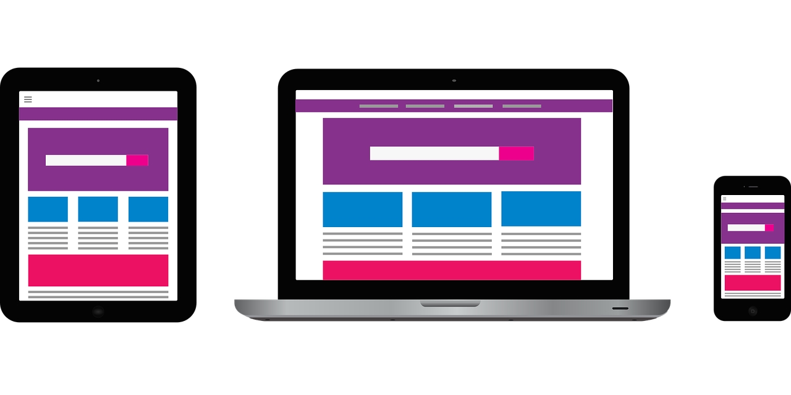
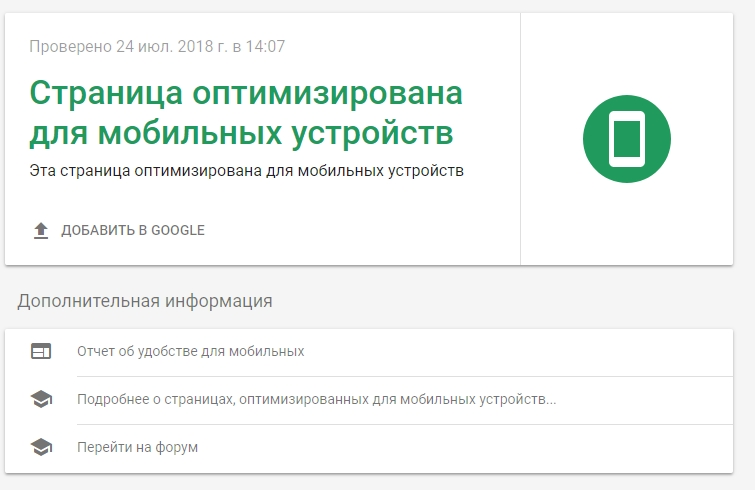

Что же такое мобильная выдача, и чем она отличается от ПК выдачи? Наверняка многие сталкивались с проблемой, когда при переходе на сайт с мобильного устройства пользоваться им было практически невозможно. На экране отображалась просто уменьшенная копия страниц для ПК. Постоянно приходилось увеличивать фрагменты текста и кнопки, чтобы прочесть или нажать не рискуя промазать. Чтобы посетителям не приходилось сталкиваться с подобными проблемами, владельцы сайтов применяют различные способы мобильной выдачи. То есть настраивают ресурс под корректное отображение на экранах телефонов или планшетов. Почему это так важно? По статистике StatCounter, еще в 2016 году процент мобильных подключений в мире превысил подключения с ПК. И с тех пор, отрыв только увеличивался. Сегодня около 5 млрд населения владеет телефонами. Более 77% из обладателей смартфонов, при поиске информации, отдают предпочтение портативным девайсам, даже когда находятся дома с доступом к ПК. Потому просто игнорировать такое количество потенциальных клиентов в Сети, очень невыгодно.
Возникла тенденция «телефонизации» сайтов, не без помощи поисковиков. Ведь им также важно, чтобы пользователи не испытывали трудностей во время поиска информации с помощью смартфонов. А потому ввели еще один критерий, влияющий на позицию ресурса на странице выдачи – корректное отображение на экранах телефонов.
Требования поисковых систем к мобильной оптимизации не слишком отличаются. Главное, чтобы она была – иначе места в ТОП мобильной выдачи, сайту не видать. Рассмотрим на примере двух наиболее популярных у нас поисковиков: Google и Яндекс.
Требования «Яндекс»: следует открыть для индексации CSS и JavaSkript; для отображения элементов Flash, Silverlight и Applet нужно устанавливать отдельные плагины, а потому использовать их не следует; текст и другие элементы страниц не должны выходить за рамки экрана по ширине; отсутствие мелкого текста, для удобства чтения на небольшом экране. Требования Google: следует указать боту, что сайт предназначен и для мобильных; отсутствие ошибок при индексации; отсутствие элементов Flash и Silverlight, вместо них лучше использовать код HTML5; текст должен быть читаемым без масштабирования; отсутствие горизонтальной прокрутки; между гиперссылками должно быть достаточное расстояние. Как можно убедиться, критерии практически совпадают, и их главная цель – удобство для мобильных пользователей. Наличие оптимизации под телефон дает неоспоримое преимущество при ранжировании поисковиками.
Очень просто. Достаточно зайти на него с телефона. Если структура страниц не отличается от той, что отображается на ПК, то сайт не оптимизирован. Конечно, это просто поможет узнать настроен ресурс под телефон или нет. Чтобы получить больше полезной информации, проверку лучше проводить при помощи вспомогательных сервисов вроде Google Search Console или Яндекс Вебмастер. Чтобы воспользоваться Google Search Console, достаточно просто зайти на страницу сервиса, указать URL сайта и запустить проверку.
В «Яндекс Вебмастер» такая проверка займет немного больше времени, ведь потребуется подтвердить права на управление ресурсом.Таким образом, можно в течение нескольких минут узнать, полностью ли соответствует ваш сайт критериям поисковых систем. А также увидеть основные ошибки. Но стоит помнить, что информация, которую вы получаете, касается только страницы адрес которой вы указали, как правило, главной. А потому лучше провести несколько проверок разных страниц.
Как правило, чтобы настроить сайт под экраны телефонов применяют или адаптивный дизайн, или мобильную версию. В первом случае, на всех устройствах отображаются страницы с одним URL, во втором – разные. При использовании адаптива, картинка подстраивается под расширение экрана устройства. Блоки выстраиваются последовательно друг за другом и доступны при вертикальной прокрутке. Чтобы не загромождать и так небольшое пространство экрана, некоторые элементы свернуты в сайдбарах. В мобильной же версии, все иначе. По сути, это дополнительный сайт, размещенный на поддомене основного. Чаще всего к адресу основного просто добавляют букву m или приставку mobile, чтобы не возникало путанницы. По структуре мобильная версия гораздо проще десктопной и часто похожа на него только визуальным дизайном, на ней можно найти лишь наиболее важную информацию и функции.
Здесь уже потребуется немного больше технических знаний. Один из наименее трудоемких способов – создать адаптив, используя директиву @media в CSS (каскадной таблице стилей). Работать придется только с одним файлом style.css, прописывая, какие свойства нужно применить к заданным элементам при определенном расширении экрана. Одна из наиболее распространенных ошибок при мобильной оптимизации – отсутствие метатега Viewport. Он отвечает за отображение страницы по ширине экрана. И если о нем забыть, то у Яндекса и Google будут к вам сразу две претензии. Во-первых, наличие метатега указано среди требований к мобильной выдаче. Во-вторых, текст, скорее всего, не будет подстраиваться под ширину экрана и появится горизонтальная прокрутка, чего поисковые системы тоже не любят.
Лучше как можно раньше начать оптимизацию. Если вам некогда этим заниматься, или не хватает средств на работу специалиста, то можно воспользоваться временными вариантами (использовать плагины). У них и есть недостатки, но это лучше чем ничего. Так вы сможете получить и удержать хотя бы часть запросов со смартфонов.